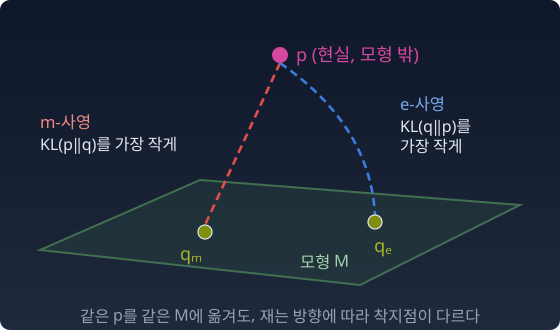

추론의 기하학
분류기나 언어 모델을 교차엔트로피로 학습할 때 줄이는 것은, 데이터의 분포와 모델의 분포 사이의 KL 발산에 상수를 더한 값이다. KL 발산은 한 분포를 다른 분포로 대신할 때 치르는 손해를 재는 양이다. 그런데 같은 두 분포를 KL의 앞 칸과 뒤 칸에 바꿔 넣어 줄이는 학습도 있다. 변분 추론이 그렇다.
모델이 다룰 수 있는 분포의 모임을 모형이라 하자. 모형 밖의 복잡한 분포 p를 모형 위의 한 점으로 옮기고 싶다. 「가장 가까운 점」을 KL의 어느 방향으로 재느냐에 따라 답이 달라지지 않는가?
달라진다. 한쪽은 넓게 덮고, 한쪽은 틀린 곳에 걸지 않으려 좁아진다. 어느 쪽도 그것만으로 「올바른」 추론은 아니다.
그러면 어떻게 해야 하는가? 그 물음에 답하기 전에, 먼저 사영이란 무엇인지를 정확히 하자. 어디에 내려찍히는지, 왜 거기인지, 그리고 내려찍힌 자리에서 무엇이 직각인지.
사영: 큰 세계를 작은 세계에 옮기기
평균을 맞추고, 로그정규화자를 미분하고, 닫힌꼴로 답을 내는 도구는 대부분 지수족 위에서 만들어졌다. 지수족은 가우시안·이항분포처럼 log p = θ·t(x) − F(θ) 꼴로 쓰이는 분포 모임이다(θ는 여기서 자연모수를 적는다). 그런데 실제 데이터의 분포는 봉우리가 여럿이거나 꼬리가 길어서 이 꼴에 들어맞는 일이 드물다. 실제 분포가 지수족에 속하지 않으면 어떻게 하나? 도구를 분포에 그대로 쓸 수 없다면, 분포 쪽을 다루기 쉬운 모형 위로 옮겨 오는 수밖에 없다.
그림자 — 비추는 각도가 모양을 정한다
3D 물체의 2D 그림자를 떠올리자. 같은 물체라도 빛을 비추는 각도에 따라 바닥에 떨어지는 자리와 모양이 다르다. 사영도 그렇다. 같은 분포를 같은 모형에 옮겨도, 「가까움」을 재는 방향이 다르면 떨어지는 점이 다르다.

정의
모형 M은 우리가 다룰 수 있는 분포들의 모임이다. 가우시안족, 이항분포족 같은 것. 현실 p는 M 밖에 있다. M 안에서 p에 「가장 가까운」 점을 고르는 방법이 KL의 방향에 따라 둘이다.
이름의 m과 e는 어디서 왔을까. p에서 착지점까지 그은 길의 종류에서 왔다. m-사영의 길은 확률을 그대로 섞는 덧셈(혼합)의 길, m-측지선이다. e-사영의 길은 로그 확률을 섞는 곱셈(지수)의 길, e-측지선이다. 측지선은 정해진 규칙으로 가장 곧게 가는 길이다. 왜 하필 그 길로 이름을 붙였는지는 착지점에서 그 길이 모형과 어떤 모양으로 만나는지를 볼 때 드러난다. 그것은 이 장의 「사영의 피타고라스」 절에서 따진다.
최대우도추정은 사영이다
데이터 x1, …, xn이 있다. 각 값이 나온 비율을 그대로 적은 분포를 경험분포 p̂라 부른다. 로그우도(우도, 곧 모형이 관측에 준 확률의 로그)의 평균을 경험분포로 다시 쓰면 이렇다.
H(p̂)는 경험분포의 엔트로피(평균적 놀라움)로, 모형과 상관없는 상수다. 그러니 로그우도를 최대로 하는 것은 KL(p̂‖q)를 최소로 하는 것과 같다. 최대우도추정(MLE, maximum likelihood estimation: 우도를 가장 크게 하는 모수를 고르는 방법)은 경험분포의 m-사영이다.
모형이 지수족이면 m-사영에는 이름이 하나 더 붙는다. 모멘트 일치(평균 같은 기댓값을 데이터와 맞추기, moment matching)다.
모형이 기대하는 충분통계량 t(x)(모형이 데이터에서 보는 요약값)의 평균을 데이터의 평균에 맞추면 그것이 답이다. 이 평균 η가 기대모수다. 모수는 분포를 정하는 숫자이고, 기대모수는 그 숫자를 기댓값으로 매긴 것이다. 가우시안이면 평균과 분산을, 이항분포면 성공 횟수의 평균을 맞춘다. 이 조건은 지수족일 때의 이야기다. 지수족이 아닌 모형에서는 MLE가 여전히 m-사영이지만, 평균이 맞는다는 보장은 없다(아래 문제 2).
아래 계산의 모형은 이항분포 B(2, θ)다. 앞면이 나올 확률이 θ인 동전을 두 번 던져 앞면 수 k = 0, 1, 2를 세는 분포다. 이 모형을 고른 까닭이 있다. 결과가 셋이라 모든 분포를 삼각형 하나 위의 점으로 그릴 수 있고(이 삼각형을 심플렉스라 부른다), 모수가 θ 하나라 모형이 그 삼각형 안의 곡선 한 줄로 보인다. 지수족 가운데 그림으로 볼 수 있는 가장 작은 예다.
파이썬
import numpy as np
def q(th): # 모형: 이항분포 B(2, θ), 결과 k = 0, 1, 2
return np.array([(1 - th)**2, 2 * th * (1 - th), th**2])
def kl(a, b):
return np.sum(a * np.log(a / b))
counts = np.array([50, 10, 40]) # 데이터 100개의 개수
p_hat = counts / counts.sum() # 경험분포
ths = np.linspace(0.001, 0.999, 9981)
loglik = [np.sum(counts * np.log(q(t))) for t in ths]
m_proj = [kl(p_hat, q(t)) for t in ths]
print(f"로그우도 최대 θ = {ths[np.argmax(loglik)]:.3f}")
print(f"KL(p̂‖q) 최소 θ = {ths[np.argmin(m_proj)]:.3f}")
print(f"모멘트 일치 θ = 평균 k / 2 = {p_hat @ [0, 1, 2] / 2:.3f}")
# 로그우도 최대 θ = 0.450
# KL(p̂‖q) 최소 θ = 0.450
# 모멘트 일치 θ = 평균 k / 2 = 0.450
세 가지 방법이 같은 점에 떨어진다.
수확
「추론 = 사영. 최대우도추정은 경험분포를 모형 위로 m-사영하는 일이다.」
문제 1. 자유투 기록에 맞는 카드
농구 선수가 자유투 10개 가운데 7개를 넣었다. 코치의 카드 묶음에는 성공률이 0.5, 0.6, 0.8, 0.9인 선수 카드만 있다. 이 기록을 가장 잘 설명하는 카드를 고르려 한다. (가) 카드마다 이 기록(넣고 놓친 순서까지 정해진 기록 하나)이 나올 확률을 구하고, 가장 큰 카드를 골라라. (나) 0.6과 0.8은 0.7에서 똑같이 0.1 떨어져 있다. 그런데도 한쪽이 이기는 까닭을, 기록의 비율 (0.7, 0.3)과 카드의 (성공률, 실패율) 사이의 KL로 설명하라. (다) 카드 묶음에 아무 성공률이나 다 있다면 어느 카드가 이기는가?
함께 풀기

0.6 카드는 0.6⁷ × 0.4³ = 0.00179, 0.8 카드는 0.8⁷ × 0.2³ = 0.00168이에요. 0.5는 0.00098, 0.9는 0.00048이고요. 0.6이 이겨요.

그런데 이상해요. 0.6이나 0.8이나 0.7에서 0.1씩 떨어졌으니까 비겨야 하는 거 아니에요? 계산이 틀렸나요?

두 카드의 차이를 「0.1」로 잰 자는 어떤 자였어요?

성공률 숫자 하나의 차이요. 그런데 이 기록이 나올 확률은 실패 쪽도 봐요. 0.8 카드는 실패율이 0.2라서 기록의 실패 비율 0.3보다 모자라고, 0.6 카드는 실패율 0.4라서 넉넉해요. 실제로 일어난 일에 확률을 모자라게 준 쪽이 더 비싸게 치러요.
그걸 KL로 재 보면요?

KL((0.7, 0.3)‖(0.6, 0.4)) = 0.0216, KL((0.7, 0.3)‖(0.8, 0.2)) = 0.0282예요. 그리고 로그 확률의 차이 ln(0.00179 / 0.00168) = 0.066이 KL 차이 0.0066의 꼭 10배예요. 자유투가 10개니까요. 기록이 나올 확률이 큰 카드가 곧 기록을 앞 칸에 둔 KL로 가까운 카드예요.
(다)는 쉬워요. 아무 카드나 있으면 0.7이요. 기록의 비율 그대로요.
그래요. 고를 수 있는 카드가 정해져 있으면 그 안에서 가장 가까운 카드를, 다 있으면 기록 그대로를 골라요. 「가장 가까운」은 기록을 앞 칸에 둔 KL로 재고요.
옷을 한 치수 크게 사는 것과 작게 사는 게 같은 「한 치수」가 아닌 거랑 같네요. 작은 옷은 아예 못 입으니까요.
문제 2. 최대우도는 평균을 맞추는가
결과가 0, 1, 2인 데이터 100개가 각각 55, 10, 35번 나왔다. (가) 이항 모형 B(2, θ)의 최대우도 추정값을 구하고, 그것이 경험분포의 m-사영임을 확인하라. (나) KL(q‖p̂)를 최소로 하는 θ도 구해 비교하라. (다) 모형을 q(θ) = (1 − θ − θ², θ, θ²)로 바꾸면 최대우도 추정된 분포의 평균이 데이터 평균 0.8과 같은가?
함께 풀기
사영이 KL 최소화라고 해서 scipy로 KL을 최소화했어요. θ = 0.147, 분포는 (0.728, 0.250, 0.022)요.
그건 평균이 0.29밖에 안 되잖아. 데이터 평균은 0.8인데. 이항분포는 지수족이니까 MLE는 평균을 맞춰야 해. θ = 0.8 / 2 = 0.4.
민준 학생, KL의 두 칸에 뭘 넣었어요?

kl(q(θ), p_hat)이요. …반대네요. 로그우도가 Σ p̂ log q니까 p̂가 앞에 와야 해요. 자유투 카드를 고를 때 기록을 앞 칸에 뒀던 것처럼요. 고쳐서 돌리면 0.400이에요. 로그우도를 직접 최대화해도 0.400이고요.
0.147은 뭐였을까요?
e-사영이요. 모형이 심판하니까, 데이터에 10%밖에 없는 1이 모형에서 크게 나오는 걸 피하려고 한쪽으로 쏠린 거예요.
조교님이 채점 기준 두 개를 헷갈려서 올리신 적 있는데, 점수가 다 이상하게 나왔거든요. 그거랑 같네요. 기준이 바뀌면 답이 바뀌어요.
(다)는 쉬워요. MLE는 언제나 평균을 맞추니까 평균 0.8이에요.
계산해 봤어요?

…MLE는 θ = 0.385이고, 분포는 (0.468, 0.385, 0.148)이에요. 평균이 0.680이에요. 안 맞아요.
평균을 맞추는 θ는요?
θ + 2θ² = 0.8을 풀면 θ = 0.430이에요. 그런데 거기서는 로그우도가 MLE보다 1.74 낮아요. 평균을 맞추는 게 최대우도가 아니에요.
아, 모멘트 일치는 지수족이라서 나온 거예요. 로그우도를 θ로 미분하면 충분통계량이 튀어나오는 건 log q가 θ에 대해 선형일 때뿐이고요. 이 모형은 θ²가 섞여서 지수족이 아니에요. MLE가 m-사영이라는 건 그대로지만, m-사영이 평균을 맞춘다는 건 지수족 위로 사영할 때만이에요.
선형대수에서 「정사영의 좌표는 내적으로 구한다」가 정규직교 기저일 때만 맞는 것과 비슷해요. 성질이 사영 자체에서 오는 게 아니라 기저에서 와요.
문제 3. 손잡이 하나짜리 분류기의 loss 바닥
리뷰 100개에 긍정·중립·부정 라벨이 70, 10, 20개 붙어 있다. 분류기의 로짓을 (w, 0, −w)로 묶어, 수 하나 w가 「얼마나 긍정 쪽인가」만 정하게 했다. 이 분류기를 교차엔트로피 loss로 학습한다. (가) 학습이 끝난 모델이 세 라벨에 주는 확률과 loss를 구하라. loss가 바닥 H(p̂)에 닿는가? (나) 학습이 끝난 모델은 데이터의 무엇을 정확히 맞추었는가?
함께 풀기
교차엔트로피를 줄이면 모델이 라벨 비율을 그대로 배우니까 (0.7, 0.1, 0.2)이고, loss는 바닥 H(p̂) = 0.802예요.
돌려 봤어요?
…w = 0.834에서 멈추고, 확률은 (0.616, 0.268, 0.116), loss는 0.901이에요. 학습률을 바꿔 더 돌려도 그대로예요.
w를 움직이면 세 확률이 어떻게 움직여요?
긍정과 부정이 서로 반대로 움직이고, 중립은 둘 사이에서 따라가기만 해요. 중립만 따로 0.1로 내릴 손잡이가 없어요. (0.7, 0.1, 0.2)는 이 모델이 낼 수 있는 분포가 아니에요.
자유투 문제에서 카드 묶음에 0.7 카드가 없었던 거랑 같네요. 모델이 낼 수 있는 분포 가운데서 고른 거예요.
그럼 학습은 그 대신 데이터의 무엇을 맞췄을까요?

log q = w·t − log Z(w)이고 t는 긍정이면 +1, 중립이면 0, 부정이면 −1이에요. 이 모델은 지수족이고, 최대우도는 t의 평균을 맞춰요. 데이터는 0.7 − 0.2 = 0.5이고, 모델도 0.616 − 0.116 = 0.500이에요. 맞춘 건 「긍정 비율 빼기 부정 비율」 하나뿐이에요.
loss가 바닥에 못 닿은 건 학습이 덜 돼서가 아니라, 모델 밖에 있는 데이터를 모델이 낼 수 있는 분포 위로 옮겼기 때문이네요. 남은 0.901 − 0.802 = 0.099가 KL(p̂‖q)고요.
조교님이 「총점만 맞으면 된다」고 하신 과제에서, 문항별 점수는 엉망이어도 총점은 정확히 맞췄던 거랑 같네요.